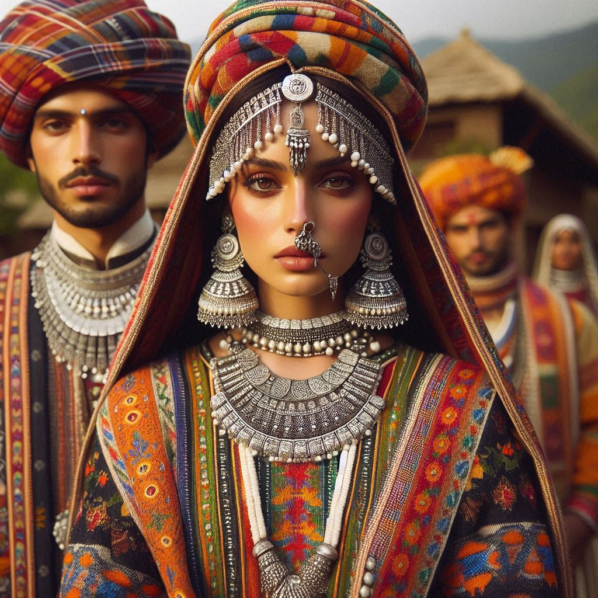
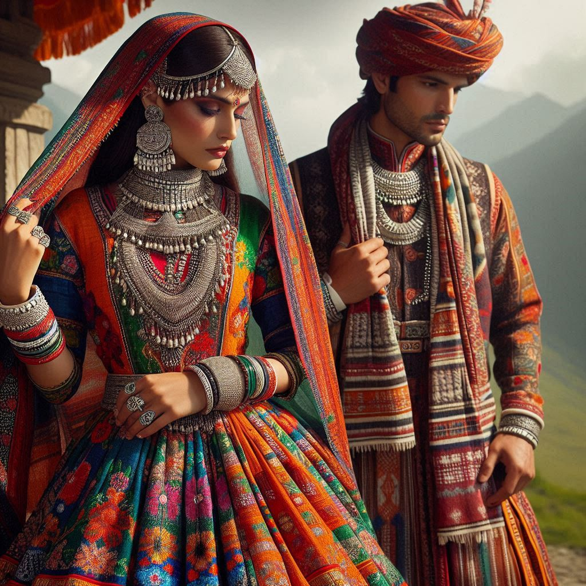

Uttarakhand's traditional dress reflects the state's cultural heritage, geographic diversity, and climate. Here’s an overview of the typical attire for men and women in Uttarakhand:
1. Women’s Dress
- Gharwali Dress: Women in the Garhwal region often wear a gown-like dress called ghunghat or ghagra, which is paired with a choli (blouse) and a dupatta (scarf). The ghunghat is usually colorful and intricately embroidered.
- Kumaoni Dress: In the Kumaon region, women traditionally wear a pichora, which is a long, flowing garment, along with a choli and a dupatta. They also wear distinctive jewelry, including necklaces and earrings made of silver and beads.
- Accessories: Women often adorn themselves with traditional jewelry, including nath (nose ring), chudi (bangles), and maang tikka (forehead ornament), which enhance their overall attire.
2. Men’s Dress
- Gharwali Dress: Men typically wear a kurta (long tunic) paired with churidar or dhoti (traditional trousers). They often complement this with a safa (turban) made of colorful cloth.
- Kumaoni Dress: In Kumaon, men traditionally wear a kurta with bundi (waistcoat) and pajama or dhoti. The outfit may be accompanied by a topi (cap) adorned with local motifs.
- Accessories: Men often wear simple jewelry, such as rings and bracelets, and carry a danda (stick) as part of their traditional attire, especially in rural areas.


3. Climate Considerations
- Warm Clothing: Due to the hilly terrain and varying altitudes, the traditional attire often includes warm layers. In colder months, people wear shawls and stoles made of wool or other warm materials.
- Fabrics: Traditional garments are typically made from local materials, such as wool and cotton, which are suitable for the region’s climate.
4. Modern Influences
- Everyday Clothing: While traditional attire is worn during festivals and special occasions, everyday clothing has been influenced by modern fashion. Many people now opt for casual Western wear, especially in urban areas.
Conclusion
The traditional dress of Uttarakhand reflects the state's rich cultural heritage and diversity. The vibrant colors, intricate patterns, and distinctive styles are not only a source of pride for the local people but also contribute to the region's unique identity. Visitors to Uttarakhand can often see these beautiful traditional outfits during festivals, weddings, and cultural events, adding to the charm of the landscape.